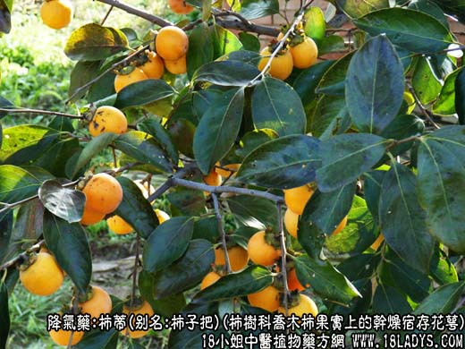
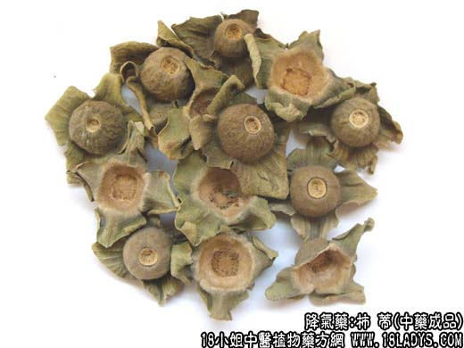
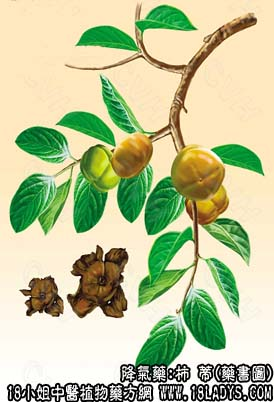

柿蒂为少常用中药。始载《名医别录》，原名柿，列为中品。
别名：柿子把。
来源：为柿树科植物落叶乔木柿果实上的干燥宿存花萼。多为栽培。
产地：主产于河南、山东、河北，其他省亦有产。
性状鉴别：宿萼呈盖状，扁圆形，直径1.5～2.5厘米。黄棕至红棕色。中央有一果柄或脱落而留下圆孔，萼的中央部较厚，边缘4裂，裂片常向上反卷，易碎裂。腹面有细密的黄棕色短绒毛，中央有果实脱落的凸起疤痕。质坚韧。气微，味微涩。以个大者为佳。
主要成分：含三萜成分、为乌索酸、齐墩果酸、白桦脂酸。
功效与作用：止呕、止呃。
炮制：去掉边把。
性味：苦，温。
归经：入肺、胃经。
功能：温中下气。
主治：呃逆，噫气等症。
临床应用：主要用于治疗胃寒气滞所致的呃逆，配丁香更能加强祛寒止呃作用，方如丁香柿蒂汤。又可用柿蒂、竹茹、木香、代赭石各3g，共为细末分三次量用开水冲服治呃逆。
用量：3～9g。
处方举例：丁香柿蒂汤：
主治：治久病呃逆，因于寒者。